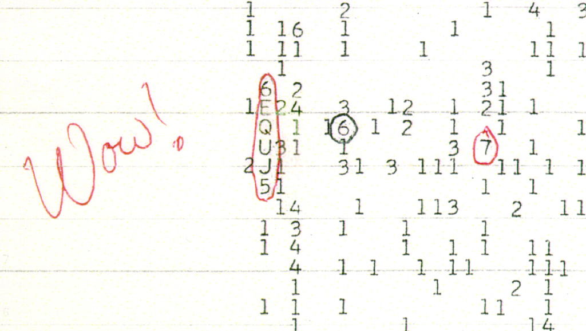

Dossier · signal radio puissant, à bande étroite et centré sur la raie à 21 centimètres, capté le 15 août 1977 par le radiotélescope de l'université d'État de l'Ohio
Signal Wow!
D'où venait le signal de 1977 ?

Résumé
Le signal « Wow! » est un signal radio puissant, à bande étroite et centré sur la raie à 21 centimètres, capté le 15 août 1977 par le radiotélescope de l'université d'État de l'Ohio surnommé The Big Ear. D'origine inexpliquée, ce signal, qui a été capté pendant 72 secondes et n'a plus été détecté depuis, a fait l'objet d'une attention significative de la part des médias.
Repères (Wikidata)
- Date de référence
- 15 août 1977
- Lieu
- observatoire radio de l'université d'État de l'Ohio
- Nature
- signal électrique, événement céleste
- Identifiant
- Q33297
Ce qu'on sait
- Le 15 août 1977, le radiotélescope Big Ear (Ohio) a enregistré pendant 72 secondes un signal radio étroit et intense, près de la fréquence de 1 420 MHz, celle de l'hydrogène.
- L'astronome Jerry Ehman a entouré la ligne sur le listing et écrit « Wow! » dans la marge.
Ce qu'on ignore
- Son origine : naturelle, humaine ou autre.
- Le signal n'a jamais été reçu de nouveau malgré de nombreuses recherches : une seule détection, donc impossible à vérifier par répétition.
Maquette. Brouillon rédigé avec une IA, statut de démonstration, rien n'a été relu par un spécialiste. Résumé : Wikipédia (CC BY-SA, français). Repères : Wikidata (CC0). Image : Wikimedia Commons, licence indiquée sous l'image.